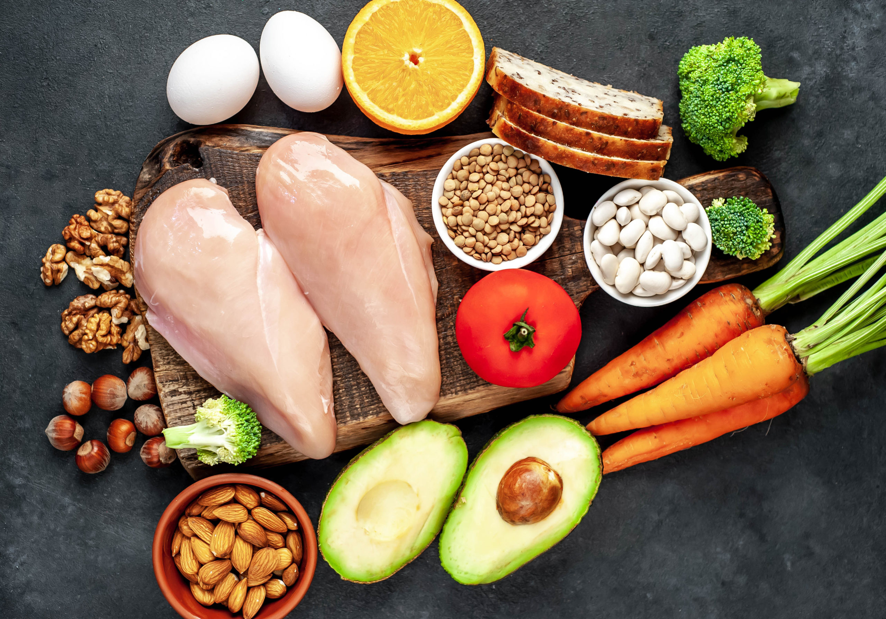

VITAMIN B3 (Niacin)
INTRODUCTION
The chemical structure of that factor was subsequently discovered in 1937 by the American biochemist Conrad Arnold Elvehjem
He induced a black tongue in dogs by feeding them the Goldberger diet, and then cured the disease by supplementing their diet with nicotinic acid
FUNCTIONS OF NIACIN
Niacin assists functions of the nervous and digestive system.
It plays a role in food metabolism and in the formation of red blood cells and skin
NAD and NADP are coenzymes that are part of the energy production system of the body.
This system works by means of oxidation and reduction (redox) reactions.
SOURCES OF NIACIN
Fish
Beef
Chicken and turkey
Legumes
Nuts
DEFICIENCY OF NIACIN
Pellagra
Pellagra includes the triad of dermatitis, dementia, and diarrhea and can result in death.
Pellagra defines systemic disease as resulting from a marked cellular deficiency of niacin. It is characterized by 4 "D's": diarrhea, dermatitis, dementia, and death.
RECIPE
Roasted Chicken
Ingredients:
1.75 - 2 kg / 3.5 - 4lb whole chicken, patted dry
Salt and pepper
2 tsp olive oil
1 lemon, quartered
3 rosemary sprigs
BUTTER:
100 g / 1 stick unsalted butter, melted
3 garlic cloves, minced
1 tbsp sage, finely chopped (Note 1)
2 tsp rosemary, finely chopped (Note 1)
1 tbsp parsley, finely chopped (Note 1)
1/2 tsp each salt and black pepper
UNDER CHOOK:
1 cup / 250 ml dry white wine, or low sodium chicken broth
1 onion, quartered (Note 2)
1 garlic bulb, halved horizontally
METHOD
Take the chicken out of the fridge 30 minutes before cooking.
1) Preheat oven to 220C/450F (standard) or 200C/430F (fan/convection). Put shelf in the middle.
2) Mix together Butter ingredients. Add juice from 2 wedges of lemon.
3) Place chicken in a roasting pan. Use a dessert spoon to loosen skin from chicken. Do the top (the breast) and the drumsticks � not the underside.
4) chicken upright, drizzle butter under skin, using most of the garlic/herb sludge, but saving a bit of butter for the skin
5) Drizzle / smear remaining butter all over the surface of the chicken. Squeeze over the juice of 2 lemon wedges.
6) Stuff used lemon wedges and rosemary inside the chicken.
7) Tie drumstick ends with string and tuck wing tips under the chicken.
8) Sprinkle all over with salt and pepper.
9) Place onion and garlic in the pan, place chicken on top. Pour wine around, drizzle chicken with oil.
10) Transfer to the oven. Roast for 10 minutes, then turn the oven down to 180C/350F (all oven types). Roast for a further 1 hr 15 minutes, or until the internal temperature is 75C/165F or until juices run clear when pierced at the join between the drumstick and the body. Baste twice (30 min then at 1 hr), spooning pan juices over skin.
11) Rest for 15 minutes � don�t cover, skin becomes wet.
12) with pan juices. I discard the onion but use the garlic in the pan. See notes for side suggestions & how to use the carcass for incredible homemade broth